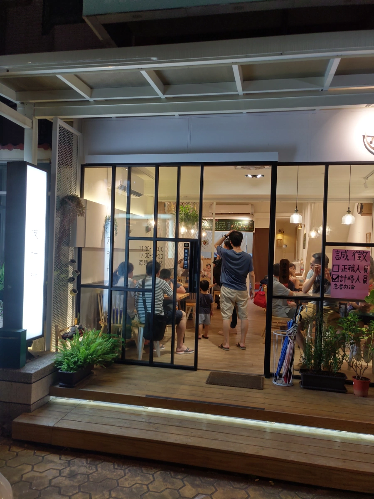
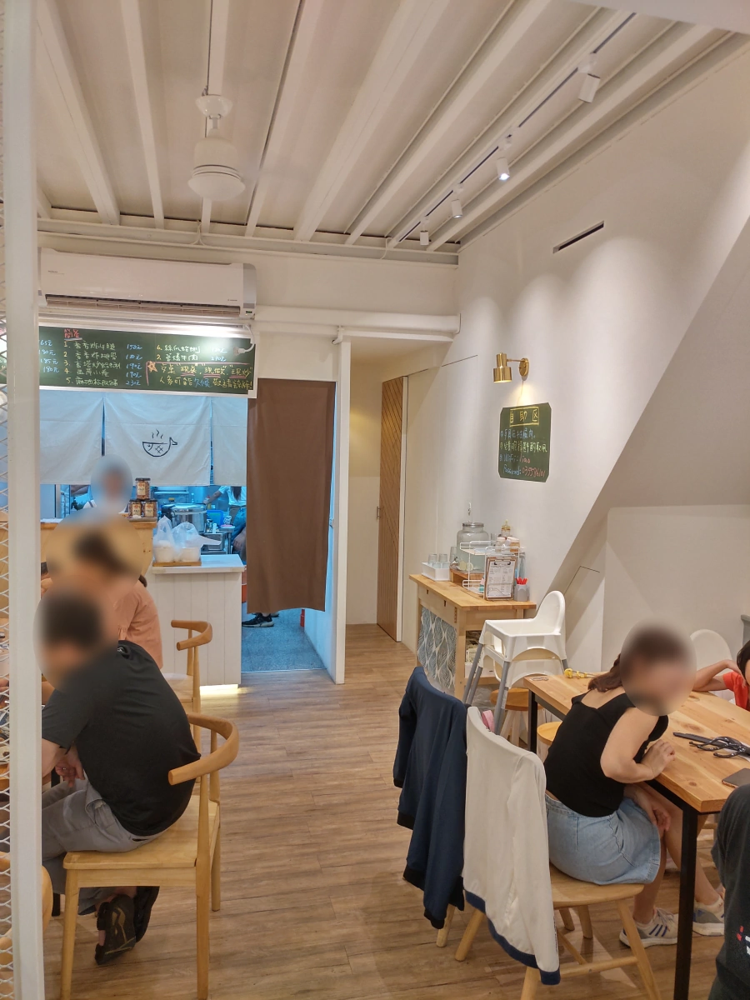
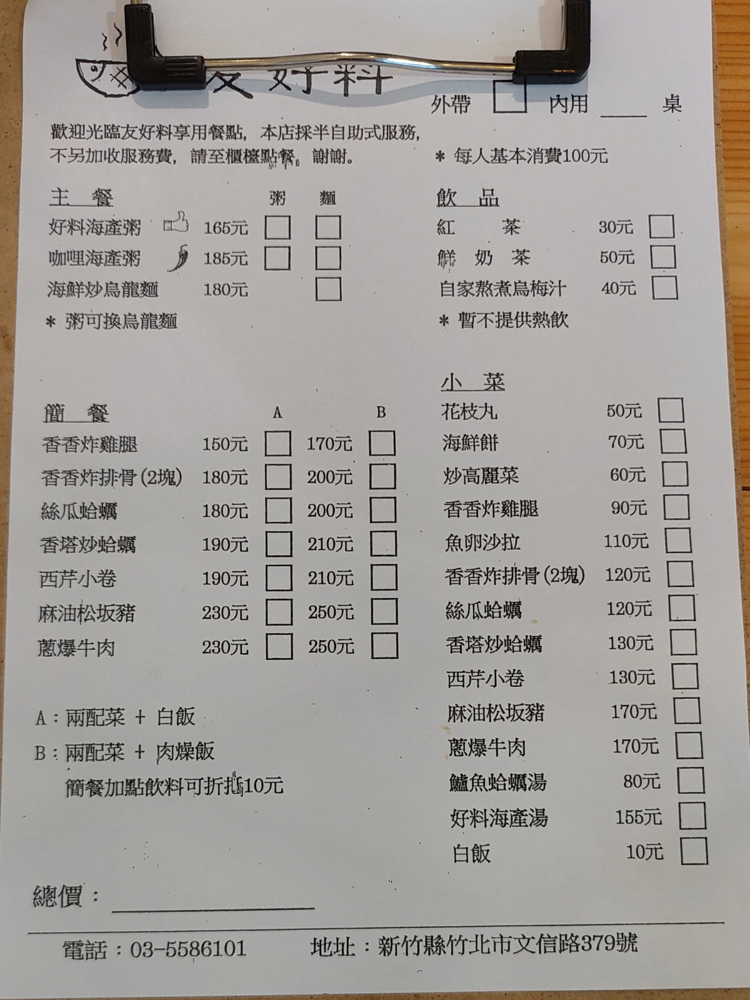
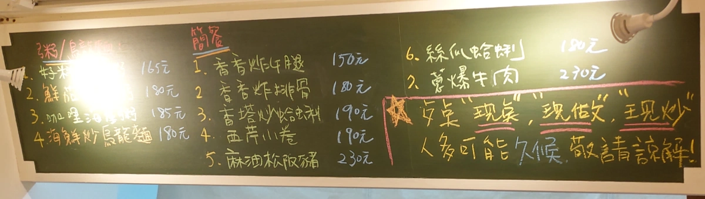
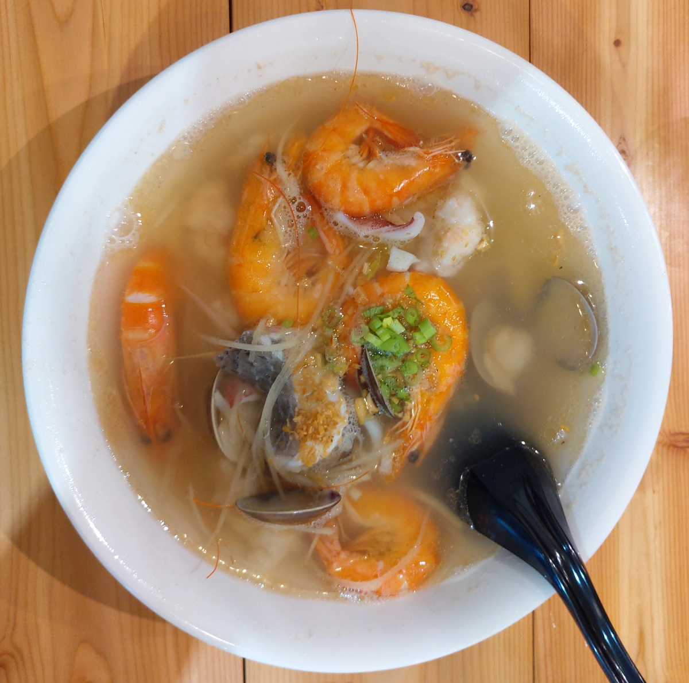
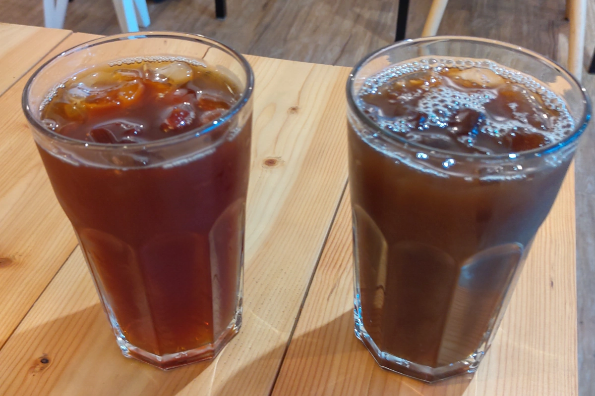
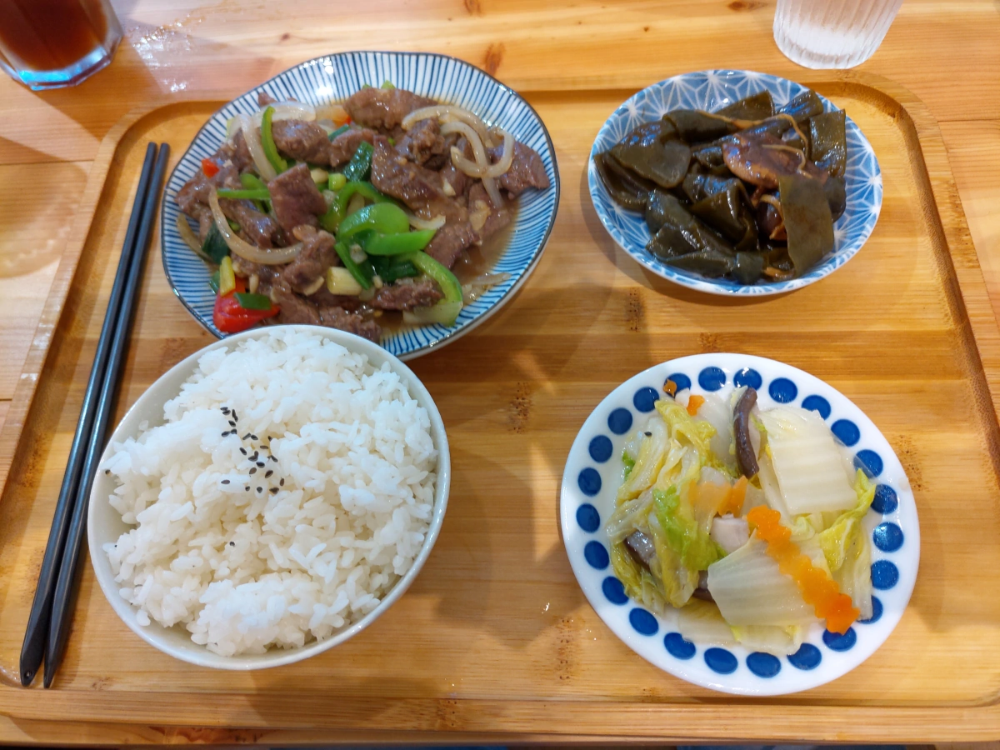
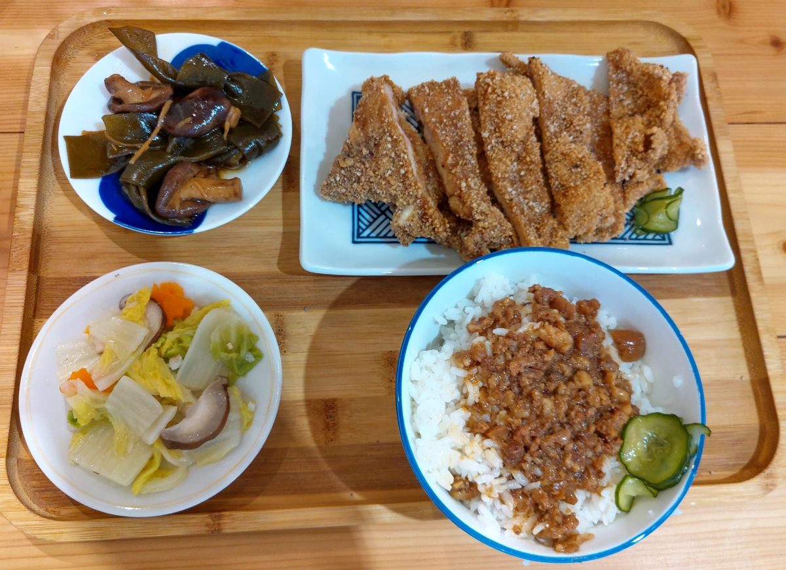

[竹北] 友好料
| 餐廳名稱: | 友好料 |
|---|---|
| 地 址: | 新竹縣竹北市文信路379號 |
| 營業時間: | 週二 ~ 周日 11:30 ~ 14:00 17:30 ~ 20:30 |
| 週一 公休 | |
| 電 話: | 03 558 6101 |
這間餐廳聽說是竹北友食寓的弟弟，對友食寓的印象不錯，所以 友好料 當然也有興趣踩雷。 可是很誇張，連續衝了兩次，第二次還是開門10分鐘就到了，竟然還是客滿。不過也因此知道原來 可以訂位，氣消了以後的某個星期天晚上，訂位成功，這次終於萬無一失了。
這是用餐完畢離開時的門口照，長時間維持客滿的狀態。 
室內裝潢用淺色系，有點溫馨的感覺。我們今天是開門幾分鐘就進去，人潮似乎退了一些，那時候 還有位子，過半小時就客滿了。 
菜單，看起來就是把家常菜做得精緻一點。 
櫃台上方的黑板，似乎是點餐排行榜，不是菜單沒有的菜色。 
好料海鮮粥，蠻大碗的，湯頭不錯，海鮮也放很多，有蝦子、蛤蠣、魚片、花枝等，還有一個似乎是店家自製的海鮮羹，比較特殊。 應該是事先熬了一大鍋高湯，客人點海鮮粥後，弄出一碗高湯把海鮮、白飯煮熟後，灑一點油蔥酥，正港台灣味。 整體吃起來還不錯吃。 
紅茶與烏梅汁。目前新竹縣好喝紅茶應該還是關西振興麵店的紅茶最濃郁，一樣都是有決明子的古早味。但振興麵店紅茶賣的貴，當然用料實在的不得了。 友好料 的紅茶沒那麼濃郁，可是好喝度對比價位，也不錯了。烏梅汁也是好喝的古早味。 
蔥爆牛肉A簡餐，配的是白飯。蔥爆牛肉竟然放青椒，略不正統。不過青椒牛肉也是道名菜，跟蔥爆牛肉炒在一起，靠著主廚優秀的廚藝， 其實感覺融合得不錯，竟然還蠻好吃的。白菜與海帶兩樣小菜，調味也不錯。 
香香炸排骨B簡餐，配的是肉燥飯。白飯煮得不錯，肉燥調味也不錯，所以肉燥飯挺優秀的。排骨有兩塊，吃得很過癮，而且炸粉似乎是番薯粉再去調的， 顆粒感很明顯，這也是古早味的手法。小菜則是一樣。 
看起來店老闆熟悉很多古早味的手法，廚藝優秀。正好本貓年紀大了，內心有點懷舊，仍然討厭仿古裝潢。所以在現代化裝潢裡面，吃著古早味， 覺得是蠻快樂的。有機會會再回訪。